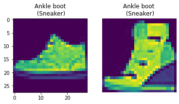

Classification and Segmentation
Table of Contents
1 Introduction
Throughout the past weeks, we’ve been given a shallow understanding of how neural networks work and how we can represent the process for images, giving convolutional filtering and sampling as operations between the neural network layers. For this homework, we have to use the PyTorch library to create our Convolutional Neural Networks to extract features from the images and 1. Classify them between classes and 2. Classify each pixel between classes (Segmentation).
2 Classification
The objective for this part is to load the Fashion database from the library and train a CNN (Convolutional Neural Network) to identify items of clothing. The output space given is of size 10, meaning we can classify the clothes between 10 different types (Shirt, Pants, …).
Here are some examples and their given category:
Figure 1: Database examples
2.1 CNN Layout
For this problem, I tried following the same CNN layout of the example given in the project specification as well as the same Dataset loading system as this example.

Figure 2: CNN Structure example
As the process shows, we start with an input and with an order of operations, we end up with a correspondence coefficient for each class given, which, in this case, would be 10. The layout I designed is given by the following scheme:
\(Input_{28\text{x}28}\)
\(\to Convolution2D_{\text{kernel size} = 5}(1 \to 32)\)
\(\to ReLU\)
\(\to MaxPool_{\text{kernel size, stride}=2}\)
\(\to Convolution2D_{\text{kernel size} = 3}(32 \to 32)\)
\(\to ReLU\)
\(\to MaxPool_{\text{kernel size}=2}\)
\(\to LinearFullyConnection(32\text{x}5\text{x}5 \to 120)\)
\(\to LinearFullyConnection(120 \to 10)\)
The really specific numbers are there by the folowing reasons:
- “\(28\text{x}28\)”: Database images resolution;
- “\(32\text{x}5\text{x}5\)”: The output for the final convolution, i.e. 32 channels of 5x5 images.
2.2 Training Accuracy
I set the training to end once the loss had converged with an error of 0.05. After the training process, which, as contrast to my other CS194-26 projects, took some time, I was able to achieve an overall precision of 92% given the database as testing input (6000 pieces by category). We can see that the “Shirt” category is the one with the most inaccuracy. I sampled a few correct and a few incorrect samples to display.
| Category | Accuracy |
|---|---|
| T-shirt/top | 83% |
| Trousers | 98% |
| Pullover | 85% |
| Dress | 93% |
| Coat | 90% |
| Sandal | 98% |
| Shirt | 84% |
| Sneakers | 97% |
| Bag | 98% |
| Ankle Boot | 97% |
Correct:  , Wrong:
, Wrong:
Correct: , Wrong:
Correct: , Wrong:
Correct: , Wrong:
Correct: , Wrong:
Correct: , Wrong:
Correct: , Wrong: 
Correct: , Wrong:
Correct: , Wrong:
Correct: , Wrong:
Correct samples to the left and incorrect samples and their correct categories to the right.
2.3 Filter Visualization
Now, we can also visualize the final filter the CNN learned. These filters are responsible for the clothes feature extraction! You can also see that the resolution changes, obviously, considering that the filtered images in lower layers of the layout are smaller than the input.
2.4 What piece of clothing am I? A test more accurate than any Buzzfeed quiz!
Well, the CNN doesn’t have “Human” as one of the categories, so I decided to test out what kind of wearable am I by giving a picture of me as an input. To make it as an input, I had to resize my image to \(28\text{x}28\), make it one-channeled and invert is so that the background would seem darker and more like the database images.
→ →
It turns out that the program identified me as a BAG. Never knew I was a bag person, but I guess if I trust those Buzzfeed quizzes I might as well trust a 92% accuracy clothing classifier.
Jokes aside, I decided to test out if the program would identify my jacket as something closer to it. So I did the same process for my jacket, but rotating a little bit more so it would be in an upright position.

Finally, it classified my jacket as Shirt, which I believe is much more accurate than bag.
3 Segmentation
This part had as input a database of facades for which we needed to classify every pixel between 5 categories (Facade, Window, Pillar, Balcony or Other).
3.1 CNN Layout
To create this CNN, I had the challenge to maintain the image resolution. So I decided to do the following based on the torch library’s documentation.
\(Input_{256\text{x}256}\)
\(\to Convolution2D_{\text{kernel size} = 2}(3 \to 50)\)
\(\to ReLU\)
\(\to MaxPool_{\text{kernel size}=2}\)
\(\to Convolution2D_{\text{kernel size} = 2}(50 \to 200)\)
\(\to ReLU\)
\(\to MaxPool_{\text{kernel size}=2}\)
\(\to Convolution2D_{\text{kernel size} = 2}(200 \to 1000)\)
\(\to Convolution2D_{\text{kernel size} = 2}(1000 \to 2000)\)
\(\to Convolution2D_{\text{kernel size} = 2}(2000 \to 4000)\)
\(\to Convolution2D_{\text{kernel size} = 2}(4000 \to 5)\)
\(\to TransposeConvolution2D_{\text{kernel size} = 6}(5 \to 5)\)
\(\to Upsample_{\text{kernel size} = 4}\)
The last two operations are to restore the image resolution (get the resolution to 64 and the upsample it to 256). I tried adding more pooling, but PyTorch’s assigned RAM allocation didn’t let me do much about it and I had to keep resetting my runtime in Google Collab. This training took a lot more time to finish due to the amount of channels in each layer. The parameters that gave me the best output were the following:
| Variable | Value |
|---|---|
| Batch size | 10 |
| Epoch | 50 |
| Optimizer | Adam |
| Loss | Cross Entropy |
| Learning Rate | 1e-3 |
| Weight Decay | 1e-5 |
3.2 Results
The final results showed that my CNN design could be much better. Given the started code, I got the Average Precisions to be the following:
| AP |
|---|
| 0.5849584324393532 |
| 0.6778363076345995 |
| 0.105562571844215 |
| 0.71513114920715 |
| 0.35387022679519115 |
In spite of 2 bad results, the CNN achieved an overall mean of 0.48 AP. We can see its execution by the following images:
→
Although it didn’t find the balconies, the rest seems to be in good shape, mostly the windows.